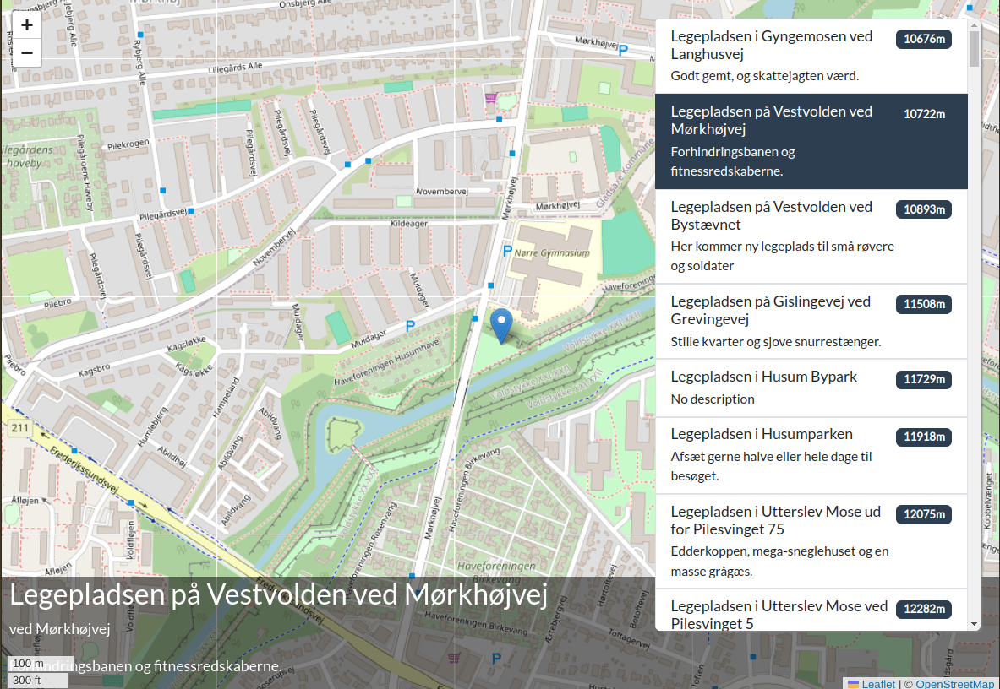

In the SidebarListItemComponent we are using pipes. Which actually works really nice.
But if this was the only place we needed the distance between two coordinates, it would be overkill to create a pipe. So instead, let's create a computed property that calculates the distances.
We need the location service to calculate the distance, so inject that into the component.
Also replace the defaultDescription pipe with a computed property and then delete the pipes from the imports array. Look at the implementation of defaultDescription to see what it does
